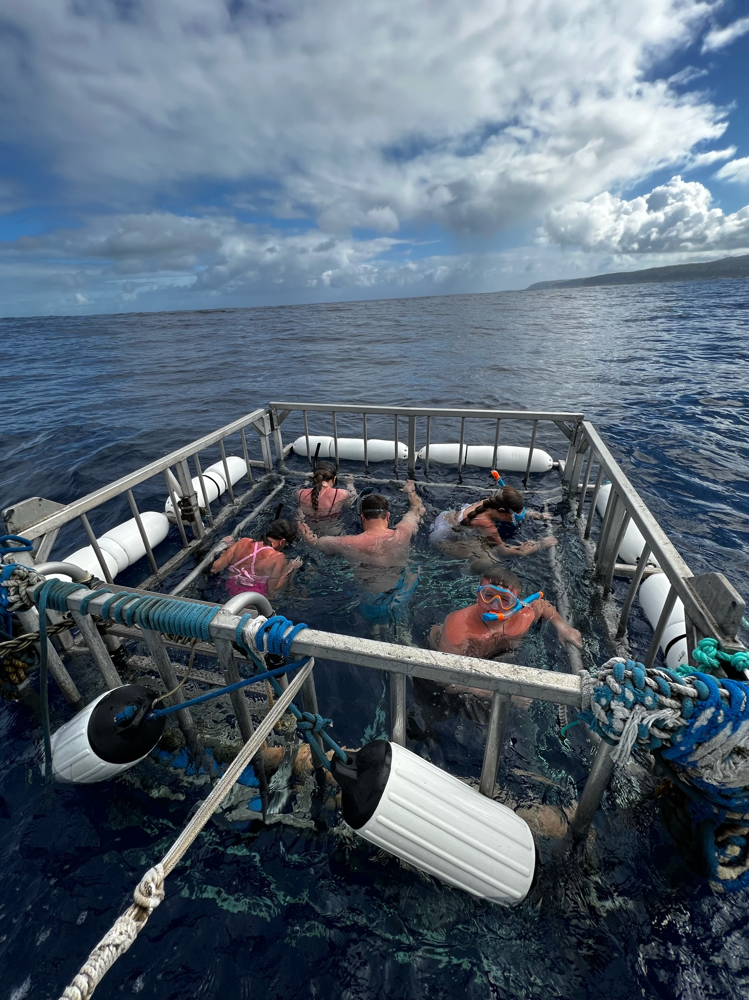
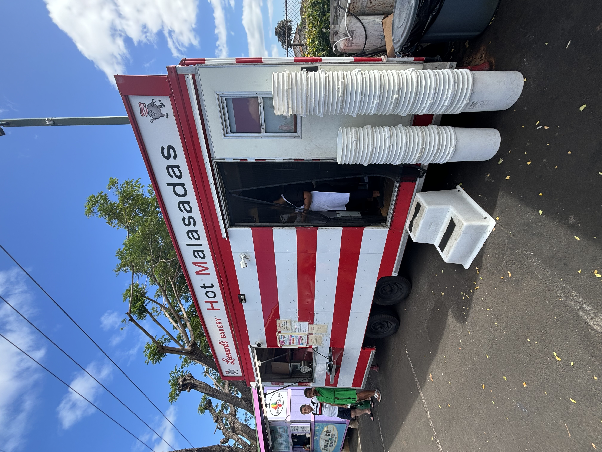

Tripping to Oahu: A Guide
Oahu, Hawaii's vibrant heart, offers an enchanting mix of urban excitement and natural beauty. Known as “The Gathering Place,” Oahu is home to stunning beaches, lush mountain trails, and cultural landmarks. Whether you're a first-time visitor or returning for another adventure, this island has something to captivate everyone. From the bustling streets of Honolulu to the tranquil shores of the North Shore, your Oahu getaway promises unforgettable experiences.

Surf’s Up:
Top Spots to Ride the Waves Oahu is a world-renowned surfing destination, with breaks suitable for every skill level. Beginners will love Waikiki Beach, where gentle waves make it easy to learn the basics. For seasoned surfers, the legendary North Shore delivers some of the planet's best waves during the winter months. Iconic spots like Pipeline and Sunset Beach attract professionals and spectators alike, offering an adrenaline-packed glimpse into surfing culture. You can also take lessons with the North Shore Surf Girls!

Landmarks and Hidden Gems:
History buffs and sightseers should start with Pearl Harbor, where the USS Arizona Memorial provides a solemn yet inspiring look at World War II history. For breathtaking views, hike Diamond Head Crater or Makapu’u Lighthouse Trail, both offering panoramic vistas of Oahu's coastlines. If you’re into exploring off-the-beaten-path locales, head to Kahana Bay for serene beach vibes or check out the Byodo-In Temple, a stunning replica of a 900-year-old Japanese Buddhist temple.

Tasting Oahu:
Local Eats and Treats Oahu's food scene is a melting pot of flavors reflecting its multicultural heritage. Don't miss sampling Hawaiian classics like poke bowls from Ono Seafood or loco moco from Rainbow Drive-In. Food trucks on the North Shore, such as Giovanni's Shrimp Truck, serve delicious garlic shrimp plates. For dessert, cool off with Matsumoto Shave Ice in Haleiwa or try a malasada from Leonard’s Bakery.
- Matsumato Shave Ice
- Malasada
- No Filling
- Coconut Filling
- Chocolate Filling
- Spam Masubi

Nightlife and Entertainment:
When the sun sets, Oahu’s energy shifts to a lively yet laid-back vibe. Waikiki is a hub for nightlife, offering beachfront bars, live music, and even traditional luau experiences like the one at Paradise Cove. For a more local scene, explore Kaka’ako, an arts district known for its murals, breweries, and eclectic eateries. Whether you prefer dancing under the stars or relaxing with a mai tai, Oahu's nightlife has you covered.
Planning Your Perfect Itinerary:
To make the most of your Oahu adventure, plan a mix of relaxation and exploration. Spend a day snorkeling at Hanauma Bay, a pristine marine sanctuary perfect for spotting colorful fish and coral. Dedicate an afternoon to exploring the Polynesian Cultural Center, where you can immerse yourself in Hawaii's rich traditions. And don’t forget to save time for sunset strolls along Lanikai Beach, consistently ranked among the most beautiful beaches in the world.
Watch this video for more information!
Jump to the top!